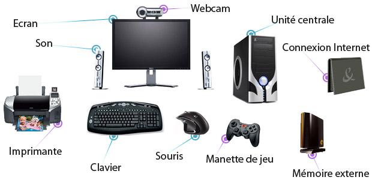

ARCHITECTURE 1 - EXERCICES¶
Et aujourd’hui ?¶
Un ordinateur personnel aujourd’hui, c’est un mélange de multiples composants.

Par rapport au modèle de Von Neumann, situer ces différents composants.
Après avoir rappeler les éléments essentiels d’une architecture de type Von Neumann, repérer sur la photo le composant suceptible d’abriter une telle structure.
QCM¶
A traiter de préférence après avoir consulté le document intitulé Une brève Histoire de l’informatique à cette adresse: https://www.math93.com/lycee/146-pedagogie/lycee/nsi/975-nsi-numerique-et-sciences-informatiques-une-histoire-de-l-informatique.html
Quel est le rôle de l’Unité Arithmétique et Logique dans un processeur?
[ ] La gestion interne du processeur;
[ ] Gérer la communication entre les différents périphériques;
[ ] Gérer les entrées / sorties
[ ] Effectuer les calculs
Parmi les éléments suivants, lequel n’est pas un périphérique d’entrée sortie ?
[ ] La souris
[ ] L’imprimante
[ ] Le clavier
[ ] La barette de mémoire
Parmi les affirmations suivantes, laquelle est vraie ?
[ ] La RAM est une mémoire accessible en lecture seulement
[ ] La RAM est une mémoire accessible en écriture seulement
[ ] La RAM est une mémoire accessible en lecture et en écriture
[ ] La RAM permet de stocker des données après extinction de la machine
Dans le modèle d’architecture de Von Neumann, les trois éléments essentiels sont
[ ] Le processeur, la mémoire et les dispositifs d’entrées/sortie
[ ] Le processeur, la carte graphique et l’écran
[ ] La RAM, les registres et la mémoire cache
[ ] Le clavier, l’écran et la souris
Alan Turing
[ ] est un ingénieur qui construit des ordinateurs sous la direction de J. Von Neumann
[ ] est le co-auteur, avec J. Von Neumann, du rapport conduisant à la construction du premier ordinateur
[ ] est le mathématicien à l’origine d’un modèle abstrait de machine permettant d’exécuter un algorithme
[ ] est le mathématicien qui utilisa l’ordinateur de Von Neumann pour résoudre ses problèmes de calcul